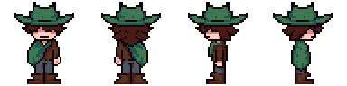

Hello!
This is my first devlog regarding BLUEBELL!
...
So. Yeah. To start...

BLUEBELL is an indie rpg that I (pewbop) been working on since early August of 2024!
I started the project on accident trying to make an RPG in the Godot Engine, and since then my ideas for the game began to grow and grow until it got to where it is today!
In terms of early development... here's a really old sprite of Moose, the main character!

Despite not ever planning on making the game, BLUEBELL has become a project I love dearly, and I'm very excited to be showing this to people!